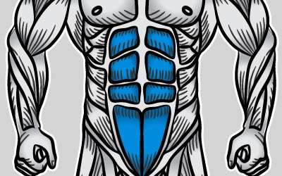

Exercícios
-

Exercícios para Abdômen
Descrição: Este exercício fortalece os músculos abdominais, ajudando a tonificar o abdômen.
Instruções: Deite-se de costas, dobre os joelhos e mantenha os pés apoiados no chão. Coloque as mãos atrás da cabeça ou cruzadas sobre o peito. Lentamente, levante o tronco em direção aos joelhos, contraindo os músculos abdominais. Volte à posição inicial e repita.
-

Exercícios para Peito
Descrição: Este exercício trabalha os músculos do peito, ajudando a desenvolver força e volume nessa região.
Instruções: Deite-se em um banco plano com os pés firmemente apoiados no chão. Segure uma barra ou halteres com os braços estendidos sobre o peito. Lentamente, abaixe o peso em direção ao peito, mantendo os cotovelos flexionados. Empurre o peso de volta à posição inicial e repita.
-

Exercícios para Bíceps
Descrição: Este exercício visa fortalecer e desenvolver os músculos do bíceps, localizados na parte frontal dos braços.
Instruções: Segure um halter em cada mão, com os braços estendidos ao longo do corpo. Mantenha os cotovelos fixos e levante os halteres em direção aos ombros, contraindo os músculos do bíceps. Lentamente, abaixe os halteres de volta à posição inicial e repita.
-

Exercícios para Ombros
Descrição: Este exercício foca no fortalecimento dos músculos do ombro, proporcionando mais estabilidade e amplitude de movimento.
Instruções: Segure um par de halteres com os braços estendidos ao lado do corpo. Levante os halteres para os lados, mantendo os cotovelos ligeiramente flexionados. Pare quando os braços estiverem paralelos ao chão. Baixe os halteres de volta à posição inicial e repita.
Esses são alguns exemplos de exercícios de musculação.